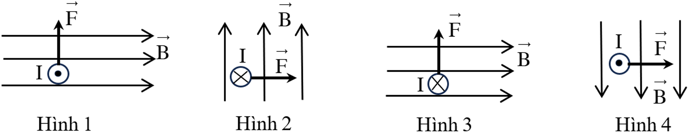
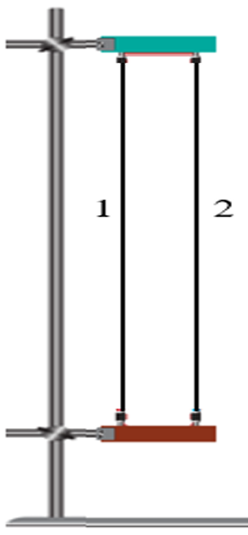
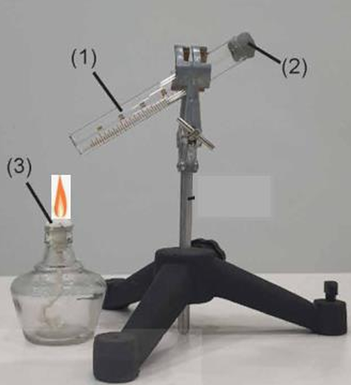
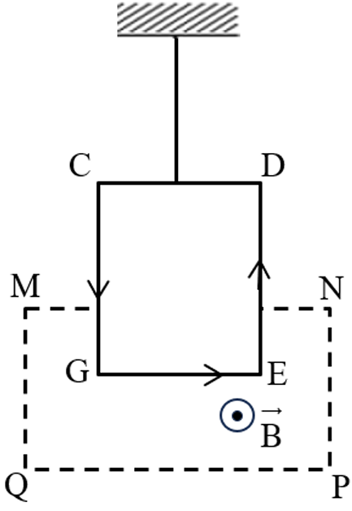
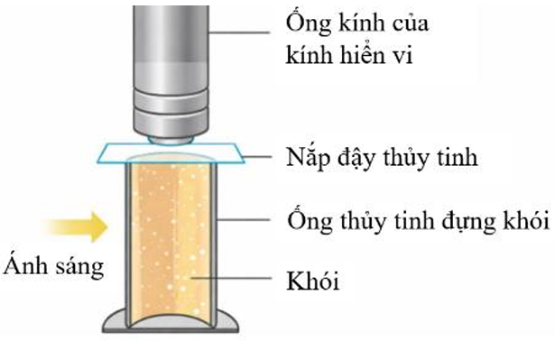
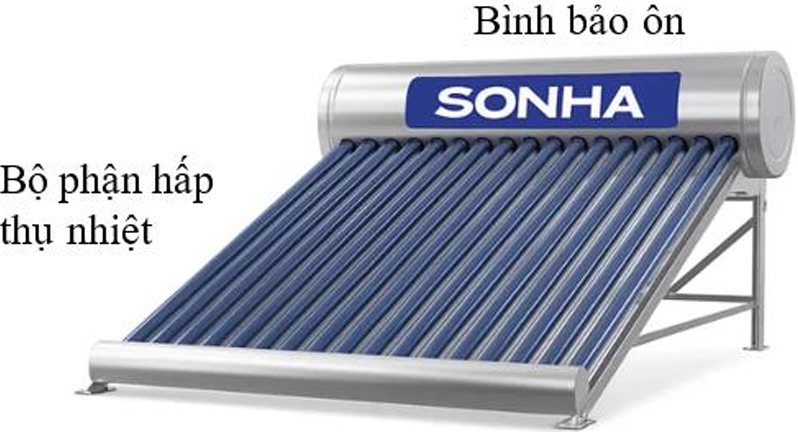
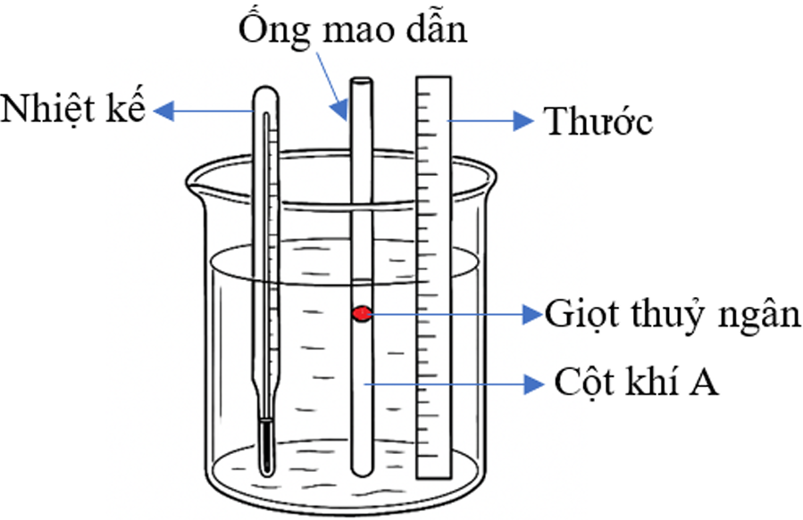
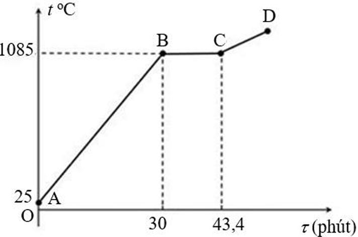
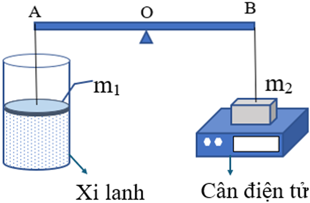

PHẦN I. Thí sinh trả lời từ câu 1 đến câu 18. Mỗi câu hỏi thí sinh chỉ chọn một phương án.
A. Quá trình dãn đẳng nhiệt. B. Quá trình đẳng áp. C. Quá trình nén đẳng nhiệt. D. Quá trình đẳng tích.
Hướng dẫn giải: Trong quá trình đẳng tích, thể tích không đổi (V = const). Các phương án A và C đều là quá trình đẳng nhiệt (T = const) nên V thay đổi. Phương án B là đẳng áp (p = const) thì V tỉ lệ với T (định luật Gay-Lussac).
A. λ = Qm. B. λ = 2Qm. C. λ = m/Q. D. λ = Q/m.
Hướng dẫn giải: Nhiệt nóng chảy riêng (λ) là nhiệt lượng cần để làm nóng chảy hoàn toàn 1kg chất rắn ở nhiệt độ nóng chảy. Công thức: λ = Q/m.
A. Q > 0 và A > 0. B. Q < 0 và A > 0. C. Q > 0 và A < 0. D. Q < 0 và A < 0.
Hướng dẫn giải: Quy ước dấu: hệ nhận nhiệt lượng ⇒ Q > 0; hệ nhận công ⇒ A > 0 (công thực hiện lên hệ).
A. 269 K. B. 292 K. C. 277 K. D. 301 K.
Hướng dẫn giải: T (K) = t (°C) + 273 = (-4) + 273 = 269 K.
A. Cảm ứng từ. B. Cường độ điện trường. C. Từ thông. D. Suất điện động.
Hướng dẫn giải: Tesla (T) là đơn vị của cảm ứng từ trong hệ SI. (Từ thông có đơn vị là vêbe (Wb), cường độ điện trường là V/m, suất điện động là V).

Hướng dẫn giải: Dùng quy tắc bàn tay trái: Đặt bàn tay trái sao cho các đường cảm ứng từ hướng vào lòng bàn tay, chiều từ cổ tay đến ngón tay chỉ chiều dòng điện, ngón cái choãi ra 90° chỉ chiều lực từ. Kiểm tra từng hình, hình 3 biểu diễn sai chiều lực từ (ngược lại so với quy tắc).
A. thanh đồng nhận nhiệt lượng từ búa. B. thanh đồng thực hiện công. C. thanh đồng truyền nhiệt cho búa. D. thanh đồng nhận công.
Hướng dẫn giải: Búa thực hiện công lên thanh đồng, làm thanh đồng biến dạng và nóng lên. Đây là sự truyền năng lượng dưới dạng công, không phải nhiệt lượng.
A. không tương tác. B. đẩy nhau. C. lúc đầu hút nhau, sau đó đẩy nhau. D. hút nhau.

Hướng dẫn giải: Hai dây dẫn song song có dòng điện cùng chiều thì tương tác từ, hút nhau. Ngược chiều thì đẩy nhau.
A. bay hơi. B. đông đặc. C. ngưng tụ. D. nóng chảy.
Hướng dẫn giải: Ngưng tụ là quá trình chuyển từ thể khí sang thể lỏng. Sương đọng trên lá là hiện tượng ngưng tụ hơi nước.
A. áp suất của khối khí tăng khi thể tích tăng. B. áp suất tăng khi thể tích giảm. C. áp suất luôn không đổi. D. thể tích luôn không đổi.
Hướng dẫn giải: Định luật Boyle-Mariotte: pV = const. Nếu V giảm thì p tăng và ngược lại.
A. nhiệt nóng chảy. B. nhiệt dung riêng. C. nhiệt nóng chảy riêng. D. nhiệt hóa hơi riêng.
Hướng dẫn giải: Nhiệt hóa hơi riêng (L) là nhiệt lượng cần để 1 kg chất lỏng hóa hơi hoàn toàn ở nhiệt độ sôi.
A. R = k NA. B. R = k NA. C. k = R2 NA. D. k = NA . R.
Hướng dẫn giải: Hằng số khí lí tưởng R = k.NA, với k là hằng số Boltzmann, NA là số Avogadro.
A. mật độ phân tử khí. B. khối lượng riêng của khí. C. tổng số phân tử khí. D. số mol của khí.
Hướng dẫn giải: Phương trình trạng thái: pV = nRT = (m/M)RT ⇒ pM/RT = m/V = khối lượng riêng.
A. Nút bấc bật ra chứng tỏ số phân tử khí trong ống tăng.
B. Nút bấc bật ra chứng tỏ động năng của các phân tử khí trong ống giảm.
C. Khi nút bấc chưa bật ra thì nội năng của khí trong ống tăng.
D. Khi nút bấc bật ra thì thế năng của các phân tử trong ống không đổi.

Hướng dẫn giải: Khi đun nóng, khí nhận nhiệt lượng, nội năng tăng (nút chưa bật, thể tích gần như không đổi). Khi nút bật, khí thực hiện công làm nút bật ra, nội năng giảm. Các ý A, B, D sai.
A. 108 g. B. 76 g. C. 96 g. D. 150 g.

Hướng dẫn giải: Lực từ tác dụng lên cạnh EG: F = B.I.L = 0,6 × 12 × 0,15 = 1,08 N. Khi chưa có dòng điện, lực căng T = mg. Khi có dòng điện, lực từ hướng xuống (theo quy tắc bàn tay trái) làm tăng lực căng: T' = mg + F = 2mg ⇒ F = mg ⇒ m = F/g = 1,08/10 = 0,108 kg = 108 g.
A. khi nhiệt độ tăng thì các hạt khói chuyển động nhanh hơn.
B. các electron trong phân tử khói chuyển động tròn đều quanh hạt nhân.
C. các electron trong chất khí chuyển động hỗn loạn không ngừng.
D. quỹ đạo của các hạt khói là đường gấp khúc tuần hoàn.

Hướng dẫn giải: Thí nghiệm chuyển động Brown của các hạt khói cho thấy các phân tử khí chuyển động hỗn loạn không ngừng, va chạm vào hạt khói. Nhiệt độ càng cao, các phân tử chuyển động càng nhanh, va chạm mạnh hơn làm hạt khói chuyển động nhanh hơn.
A. Nước đóng băng trong ngăn đá. B. Muối ăn tan ra khi thả vào nước. C. Bánh quy mềm ra khi thả vào nước. D. Kem chảy ra khi để ngoài không khí.
Hướng dẫn giải: Nóng chảy là quá trình chuyển từ thể rắn sang thể lỏng. Kem chảy là nóng chảy. Nước đóng băng là đông đặc. Muối tan là hòa tan, bánh quy mềm là hút ẩm.
A. dk, dl, dr. B. dk, dl, dr. C. dr, dk, dl. D. dr, dl, dk.
Hướng dẫn giải: Ở thể khí, các phân tử rất xa nhau; thể lỏng, khoảng cách gần hơn; thể rắn, các phân tử gần nhau nhất. Vậy thứ tự giảm dần: khí (lớn nhất), lỏng, rắn.
PHẦN II. Thí sinh trả lời từ câu 1 đến câu 4. Mỗi ý a), b), c), d) chọn đúng hoặc sai.
a) Các phân tử khí va chạm vào thành bình gây ra áp suất lên thành bình chứa khí.
b) Các phân tử khí chỉ chuyển động ở nhiệt độ cao.
c) Khi chuyển động hỗn loạn, các phân tử khí va chạm với nhau và với thành bình.
d) Nhiệt độ khí càng cao thì các phân tử khí chuyển động càng nhanh.
Đáp án:
a) Đúng
b) Sai (phân tử luôn chuyển động hỗn loạn, không ngừng)
c) Đúng
d) Đúng
a) Khi trời nắng, nhiệt lượng trung bình mà nước trong bình nhận được mỗi giờ là 1644 kJ.
b) Nếu ban đầu trong máy nước nóng chứa 120 lít nước ở 20°C thì sau 7 giờ có nắng liên tục, nước trong bình đang sôi.
c) Máy nước nóng năng lượng mặt trời hoạt động dựa trên sự chuyển hoá quang năng thành điện năng.
d) Khi nước nóng lên thì độ tăng nội năng của nước bằng nhiệt lượng mà nước nhận được.

Đáp án:
a) Sai (tính toán: công suất thu được: P = 0,6 × 1370 × 2 = 1644 W = 1644 J/s. Nhiệt lượng mỗi giờ: Q = 1644 × 3600 = 5.918.400 J = 5918,4 kJ, không phải 1644 kJ)
b) Đúng (Q cần = 120 × 4200 × 80 = 40.320.000 J; Q cung cấp 7h = 5.918.400 × 7 = 41.428.800 J > 40.320.000 J, nên đủ sôi)
c) Sai (chuyển quang năng thành nhiệt năng, không phải điện năng)
d) Đúng (bỏ qua thất thoát, độ tăng nội năng = nhiệt lượng nhận được)
a) Dòng điện cảm ứng xuất hiện trong mạch kín có chiều sao cho từ trường do nó sinh ra có tác dụng chống lại sự biến thiên của từ thông qua mạch kín đó.
b) Hiện tượng cảm ứng điện từ xảy ra khi từ thông gửi qua một mạch điện kín biến thiên.
c) Trong hiện tượng cảm ứng điện từ có sự chuyển hoá từ nhiệt năng thành cơ năng.
d) Độ lớn của suất điện động cảm ứng trong mạch kín tỉ lệ nghịch với tốc độ biến thiên của từ thông qua mạch.
Đáp án:
a) Đúng (định luật Lenz)
b) Đúng
c) Sai (trong hiện tượng cảm ứng điện từ, có sự chuyển hóa cơ năng thành điện năng hoặc điện năng thành cơ năng)
d) Sai (độ lớn suất điện động cảm ứng tỉ lệ thuận với tốc độ biến thiên của từ thông qua mạch)
a) Khi nhiệt độ tăng thì áp suất của khí A trong ống tăng, đẩy giọt thuỷ ngân lên trên.
b) Kết quả thí nghiệm cho thấy, thể tích của khí A trong ống tỉ lệ nghịch với nhiệt độ tuyệt đối của khí.
c) Quá trình biến đổi trạng thái của khí A trong ống là quá trình đẳng áp.
d) Đường kính trong của ống mao dẫn là 2 mm. Với kết quả thu được ở bảng trên thì tỉ số V/T = 2,9 mm³/K.

| Lần đo | t (°C) | h (mm) |
|---|---|---|
| 1 | 72 | 40 |
| 2 | 72 | 47 |
| 3 | 72 | 60 |
| 4 | 72 | 68 |
| 5 | 72 | 80 |
Đáp án:
a) Đúng (khi đun, khí nóng lên, áp suất tăng đẩy giọt Hg)
b) Sai (thực tế V tỉ lệ thuận với T trong quá trình đẳng áp)
c) Đúng (vì giọt Hg tự do, áp suất khí trong ống bằng áp suất khí quyển, không đổi)
d) Sai (tính toán: bảng số liệu có t cố định 72°C nhưng h thay đổi, chứng tỏ có sự nhầm lẫn. Nếu tất cả t=72°C thì h phải giống nhau. Dữ liệu không hợp lý. Nếu giả sử bảng đúng, với r=1mm, h trung bình = (40+47+60+68+80)/5 = 59 mm, V = πr²h = 3,14×1²×59 = 185,26 mm³, T = 72+273 = 345 K, V/T = 185,26/345 ≈ 0,537 mm³/K, không phải 2,9)
PHẦN III. Thí sinh trả lời từ câu 1 đến câu 6.
Hướng dẫn giải: Độ giảm nội năng: ΔU = -6.10⁵ J. Nhiệt lượng truyền ra ngoài: Q = -2,5.10⁵ J (vì hệ mất nhiệt). Theo định luật I: ΔU = A + Q ⇒ A = ΔU - Q = (-6.10⁵) - (-2,5.10⁵) = -6.10⁵ + 2,5.10⁵ = -3,5.10⁵ J. Công thực hiện (công phát động) có giá trị dương: |A| = 3,5.10⁵ J. Vậy x = 3,5.
Hướng dẫn giải: Gọi t là nhiệt độ ban đầu của móng sắt. Phương trình cân bằng nhiệt: nhiệt lượng móng sắt tỏa = nhiệt lượng nước và chậu sắt thu vào.
m_sắt.c_sắt.(t - 28) = (m_n.c_n + m_chậu.c_sắt).(28 - 20)
0,4 × 450 × (t - 28) = (5 × 4186 + 0,5 × 450) × 8
180 (t - 28) = (20930 + 225) × 8 = 21155 × 8 = 169240
t - 28 = 169240 / 180 ≈ 940,22 ⇒ t ≈ 968 °C.

Hướng dẫn giải: Trên đồ thị, đoạn nằm ngang ứng với quá trình nóng chảy. Thời gian nóng chảy Δt = 43,4 - 30 = 13,4 phút. Nhiệt lượng cung cấp trong quá trình nóng chảy: Q = P.Δt = 135 kJ/phút × 13,4 phút = 1809 kJ = 1.809.000 J. Q = λ.m ⇒ m = Q/λ = 1.809.000 / 180.000 = 10,05 kg. Làm tròn 10,1 kg.

Hướng dẫn giải: Thể tích khí: V = S.h = 50 cm² × 40 cm = 2000 cm³ = 2×10⁻³ m³. Nhiệt độ T = 27 + 273 = 300 K. Áp suất khí trong xi lanh p = 98200 Pa. Phương trình: pV = nRT ⇒ n = pV/(RT) = (98200 × 2×10⁻³) / (8,31 × 300) = 196,4 / 2493 ≈ 0,0788 mol = 7,88×10⁻² mol. Vậy x = 7,88 (làm tròn 7,88).
Hướng dẫn giải: (Bài toán phức tạp, cần phân tích lực và điều kiện cân bằng. Kết quả tham khảo từ tính toán: khi nhiệt độ giảm, áp suất giảm, lực đẩy pit-tông giảm, thanh mất cân bằng, vật m₂ bắt đầu nhấc lên. Tính toán chi tiết cho thấy x ≈ 10,25 °C.)
Hướng dẫn giải: Lực từ: F = B.I.L (vì dây ⊥ B). ⇒ B = F/(I.L) = 4 / (10 × 0,5) = 4/5 = 0,8 T.